Recent Collections for Mono 3D detection
在IROS2020投稿前后积攒了一系列单目3D检测paper的阅读。这里一次过进行记录,开源在前，未开源在后.
这里列出目前有文章可寻的KITTI排行榜(2022.07.23)
Update(2020.04.02):Update scores for YOLOMono3D
Update(2020.07.24): Update Kinematic 3D
Update(2020.09.08): Update SSL-RTM3D
Update(2021.02.01): Update Ground Aware 3D
Update(2021.03.17): Update CaDDN
Update(2021.04.10): Update MonoFlex, MonoRun, MonoRCNN
Update(2021.06.26): Update MonoEF
| Methods | Moderate | Easy | Hard | Time |
|---|---|---|---|---|
| LPCG | 17.80 | 25.56 | 15.38 | 0.03 |
| PS-fld | 17.74 | 23.74 | 15.14 | 0.25 |
| dd3d | 16.34 | 23.22 | 14.20 | - |
| DID-M3D | 16.29 | 22.50 | 13.95 | 0.02 |
| MonoDETR | 16.26 | 24.52 | 13.93 | 0.04 |
| MonoDTR | 15.39 | 21.99 | 12.73 | 0.04 |
| GUPNet | 15.02 | 22.26 | 13.12 | - |
| DEVIANT | 14.46 | 21.88 | 11.89 | 0.04 |
| DLE | 14.33 | 24.23 | 10.30 | 0.06 |
| AutoShape | 14.17 | 22.47 | 11.36 | 0.05 |
| MonoFlex | 13.89 | 19.94 | 12.07 | 0.03 |
| MonoEF | 13.87 | 21.29 | 11.74 | 0.03 |
| CaDDN | 13.41 | 19.17 | 11.46 | 0.64 |
| GroundAware3D | 13.17 | 21.60 | 9.94 | 0.05 |
| Aug3DRPN | 12.99 | 17.82 | 9.78 | 0.08 |
| Kinematic3D | 12.72 | 19.07 | 9.17 | 0.12 |
| MonoRCNN | 12.65 | 18.36 | 10.03 | 0.07 |
| MonoRun | 12.30 | 19.65 | 10.58 | 0.07 |
| YOLOMono3D | 12.06 | 18.28 | 8.42 | 0.05 |
| D4LCN | 11.72 | 16.65 | 9.51 | 0.2 |
| M3DSSD | 11.46 | 17.51 | 8.98 | * |
| SSL-RTM3D | 11.45 | 16.73 | 9.92 | 0.04 |
| Refined-MPL | 11.14 | 18.09 | 8.94 | 0.15 |
| AM3D | 10.74 | 16.50 | 9.52 | 0.4 |
| RTM3D | 10.34 | 14.41 | 8.77 | 0.05 |
| MonoPair | 9.99 | 13.04 | 8.65 | 0.06 |
| SMOKE | 9.76 | 14.03 | 7.84 | 0.03 |
| M3D-RPN | 9.71 | 14.76 | 7.42 | 0.16 |
目录:
- Recent Collections for Mono 3D detection
- LPCG
- Pseudo-Stereo
- DiD-M3D
- MonoDETR
- MonoDTR
- GUPNet
- MonoFlex
- MonoEF
- MonoRCNN
- Aug3DRPN
- D4LCN
- M3DSSD
- RTM3D
- MonoPair
- SMOKE
- YOLOMono3D
LPCG
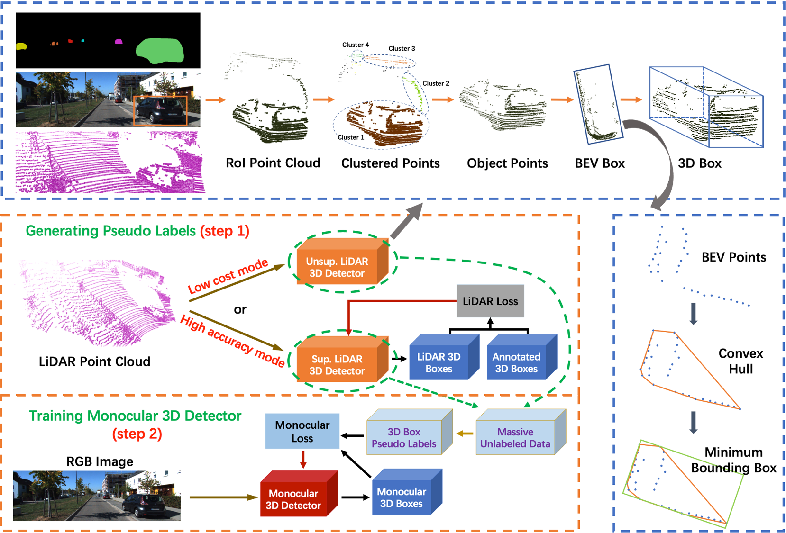
这篇paper带来了很强的实用性。利用雷达，利用自监督，利用上大量kitti raw中没有被标记的数据。
- Step 1， 训练一个雷达的detector, 并且准备一个基于雷达的 unsupervised detector.
- Step 2. 训练图片的时候，利用雷达的detector以及unsupervised detector, 在没有被标记的数据上生成 pseudo label. 扩大训练数据量。得到很好的性能。
Pseudo-Stereo
这篇paper做了很神奇的操作，就是采用单目伪装双目，然后使用双目的detector (LIGA, YOLOStereo3D)出结果，得到相当不错的性能。
作者尝试了几种方案，
- 图像级别的生成：单目预测一个disparity map,完全直接构建双目图像。 性能一般
- 特征级别的生成：使用上述的Disparity map直接构建一个特征图，和右图的特征图输入双目匹配部分。效果最好
- 克隆，直接复制原来的单目特征，进入双目匹配部分。效果还不错
DiD-M3D
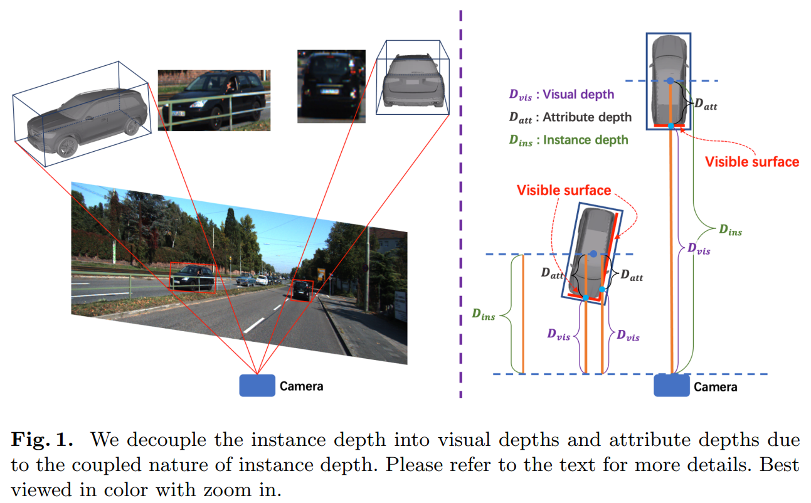
这篇paper整体方案上与GUPNet是一致的，是一个二阶段的算法。它第一个引入并强调了 visual depth / attribute depth的概念。
visual depth也就是物体表面的深度，可以理解为该像素实际物体点的深度，attribute depth则是该点到物体中心的深度距离。作者强调认为，我们不应该直接预测中心的深度距离，而应该把这两个深度解耦。并且这个算法现在可以对内参完全不敏感了。
- Visual Depth 是物体像素到相机的距离，如果我们把图片裁剪/放大，那么对应的，我们预测的深度像素应该会随着焦距改变，这部分的深度是affine-sensitive的。
- attribute depth是物体表面到三维目标中心点的距离，这部分深度是由车子的姿态和车子的大小决定的，因而可以认为这部分深度是 affine-insensitive, 与我们放大缩小图片无关。
- GT和MultiSensor Refinement那篇的做法比较接近，利用3D框内的点云点构造一个稀疏的visual depth label.然后用gt 减去它就可以得到 attribute loss. 后续做数据增强的时候 visual depth随着scale改变，但是attribute loss则不改变。
- 使用L1 Loss, 都预测Laplacian uncertainty, 融合也一样。
MonoDETR
这篇paper则完全引入了DETR, 似乎是第一篇把DETR的输出头完全地引入Mono3D这个任务。

- 特征上分开visual encoder和有独立深度信息补充的depth encoder;
- depth predictor预测一个多分类深度估计，由object depth进行监督，2d框内的所有点深度gt为物体的深度，相交部分取深度最小值，框外分类为独立的背景类。
- 在depth cross-attention中，利用深度的预测值构建深度positional embedding；把对应坐标的深度预测分布，引入作为positional embedding.
- DETR深度的最终输出，由，(分别是上下边到3D投影中心的距离，网络也以此作为prediction attribute) ，直接预测以及预测的深度图在对应点的插值组成。
MonoDTR
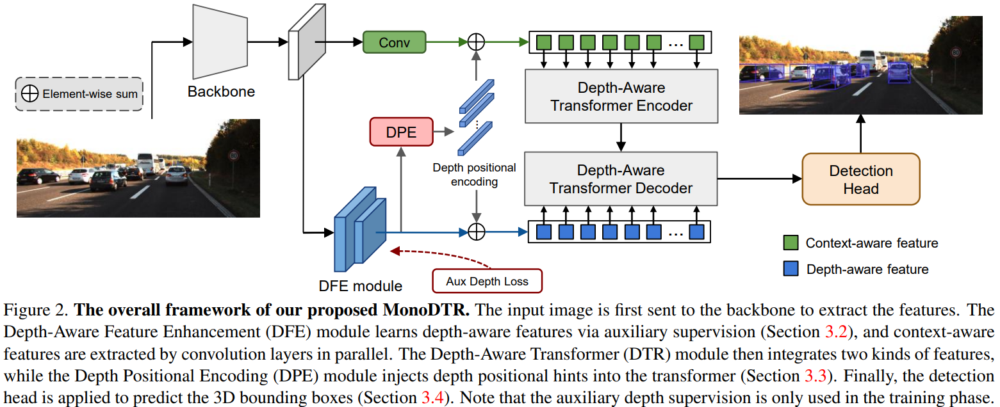
整体来说这篇paper采用了卷积backbone加transformer head的整体方案来构造网络，输出的形态与YOLOMono3D是一样的。
也通过DFE引入了深度监督。
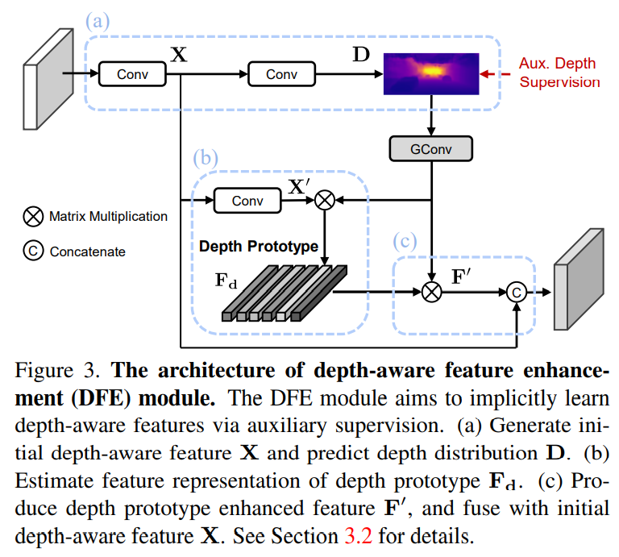
GUPNet
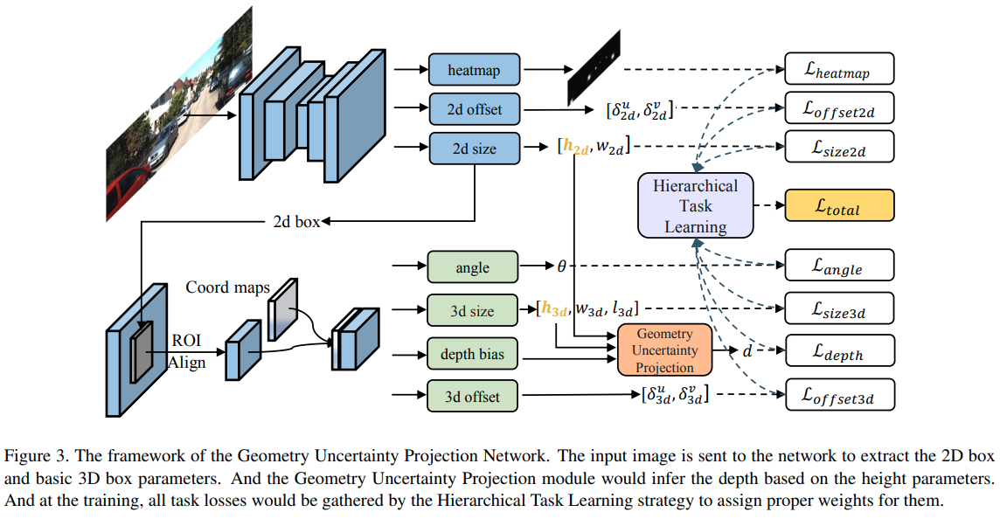
这篇paper是目前少有的使用二阶段检测网络实现高性能的结果.使用centerNet完成2D检测，然后使用RoIAlign提取特征.3D的输出与MonoFlex有点相似，输出的是带有不确定的深度，采用的是2D的简要推理加上网络的一个学习值:
本文还提出了一个hierarchical task learning.指优先把2D检测训练好，再把WHL训练好，最后再训练depth。"训练好"的评判标准是epochs之间的mean loss相差不大。
self.loss_graph = {'seg_loss':[],
'size2d_loss':[],
'offset2d_loss':[],
'offset3d_loss':['size2d_loss','offset2d_loss'],
'size3d_loss':['size2d_loss','offset2d_loss'],
'heading_loss':['size2d_loss','offset2d_loss'],
'depth_loss':['size2d_loss','size3d_loss','offset2d_loss']}
def compute_weight(self,current_loss,epoch):
T=140
#compute initial weights
loss_weights = {}
eval_loss_input = torch.cat([_.unsqueeze(0) for _ in current_loss.values()]).unsqueeze(0)
for term in self.loss_graph:
if len(self.loss_graph[term])==0:
loss_weights[term] = torch.tensor(1.0).to(current_loss[term].device)
else:
loss_weights[term] = torch.tensor(0.0).to(current_loss[term].device)
#update losses list
if len(self.past_losses)==self.stat_epoch_nums:
past_loss = torch.cat(self.past_losses)
mean_diff = (past_loss[:-2]-past_loss[2:]).mean(0)
if not hasattr(self, 'init_diff'):
self.init_diff = mean_diff
c_weights = 1-(mean_diff/self.init_diff).relu().unsqueeze(0)
time_value = min(((epoch-5)/(T-5)),1.0)
for current_topic in self.loss_graph:
if len(self.loss_graph[current_topic])!=0:
control_weight = 1.0
for pre_topic in self.loss_graph[current_topic]:
control_weight *= c_weights[0][self.term2index[pre_topic]]
loss_weights[current_topic] = time_value**(1-control_weight)
#pop first list
self.past_losses.pop(0)
self.past_losses.append(eval_loss_input)
return loss_weights
MonoFlex
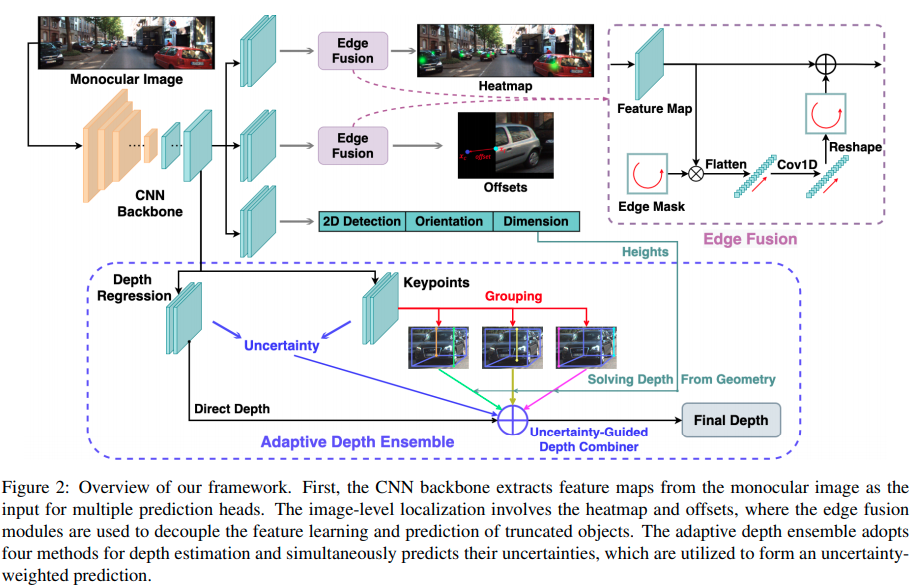
这篇paper在计算深度的时候和MonoRCNN不谋而合，觉得尽管同时找出多个角点很有诱惑力，但是一点点的误差就会造成3D回归很大的错误，所以主要依靠计算角点在图像上的高度来推理深度。
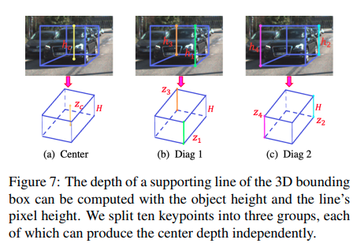
MonoEF
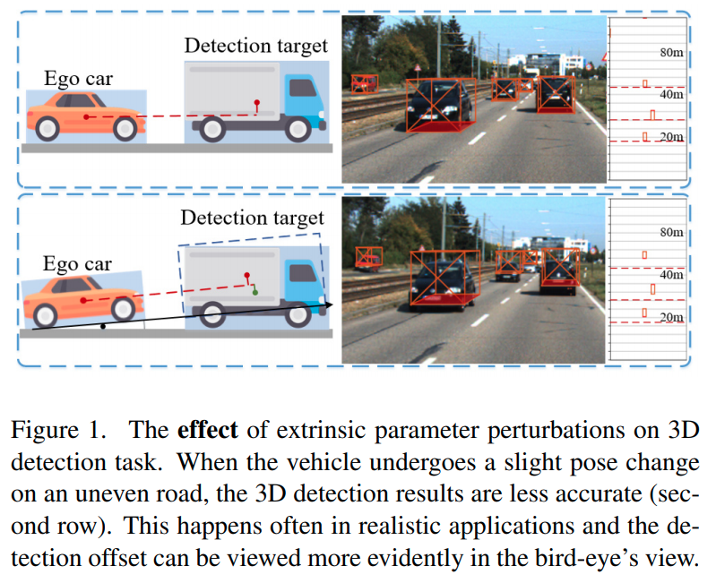
这篇paper关注外参的变动以及外参变动最相机感知效果的影响。同时会主动地通过序列图片预判车辆的运动.
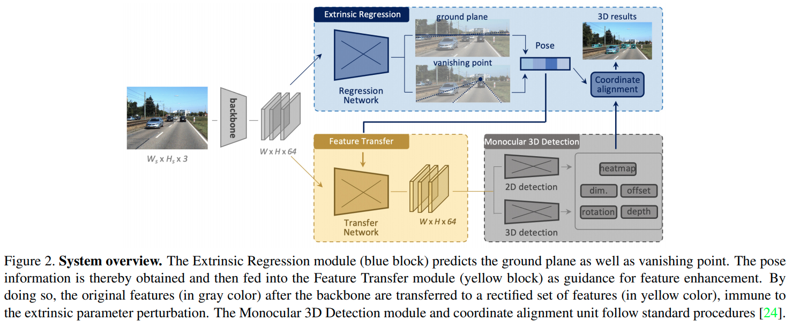
MonoRCNN
这篇paper与MonoFlex有相似的思路，都是用projected visual height来计算深度。这篇文章则是基于two-stage的算法。文章直接指出了keypoints的问题。
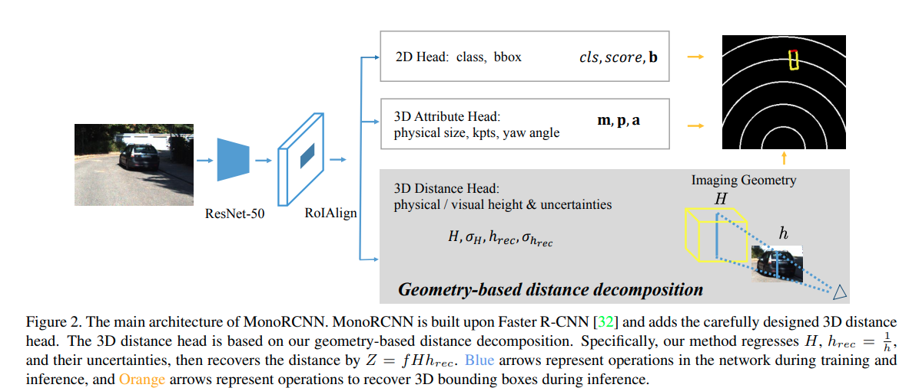
Aug3DRPN
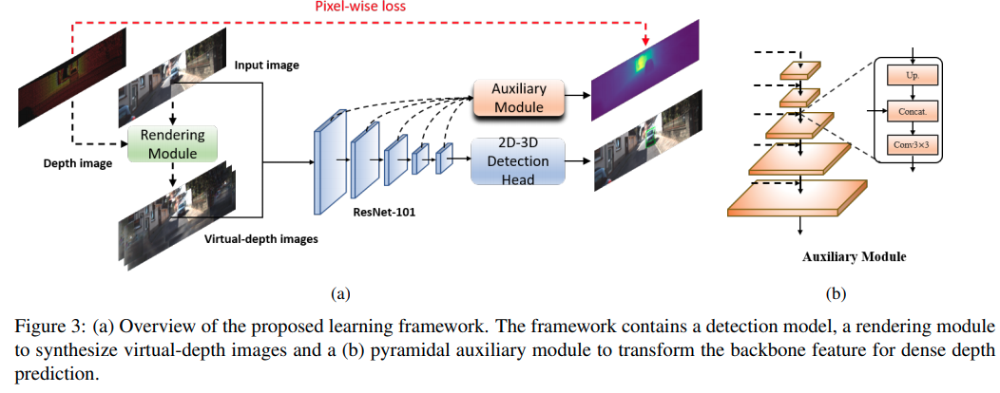
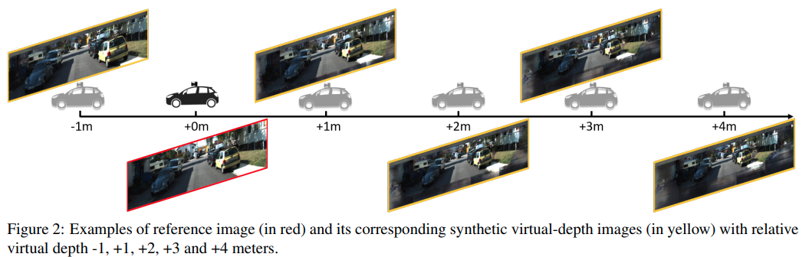
这篇paper基于M3D-RPN的做法
- 额外的深度预测
- 利用深度预测，渲染虚拟相机结果,增强训练结果.
D4LCN
这篇paper完全继承了M3D-RPN的衣钵，它不同的地方在于，摒弃了M3D-RPN处理缓慢的height-wise convolution,而是使用单目估计深度，然后使用深度作为卷积核的guide, 这个guide类似于这几篇文章的操作:guidenet;DFN
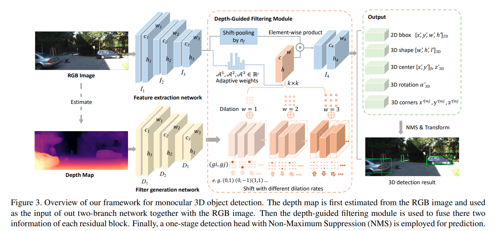
M3DSSD
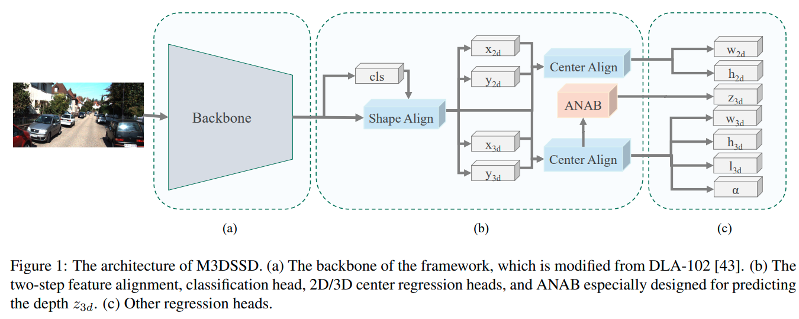
这篇paper采用了大backbone,用deformable convolution的方法，重点解决2D detection中感受野与anchor不匹配问题以及3D中心与2D中心不匹配的问题. Shape alignment 与 center alignment 对应基于2D与3D的两种deformable base shift的产生方式。
另外本文又提出了 Asymmetric Non-Local Attention Block (ANAB)模块, 用于增强感受野.
RTM3D
这篇文章还没有正式开源，但是github就先开着了。这篇文章在技术上有一定的新意，它使用CenterNet的架构估计大量的keypoints以及冗余的3D信息，最后通过最优化融合。使用大量冗余信息它不是第一个,前者比如有SS3D,但是它绕过了anchor使用CenterNet有一定的新意。 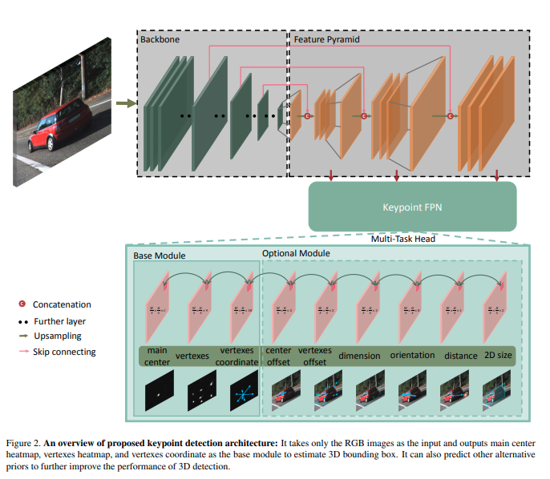 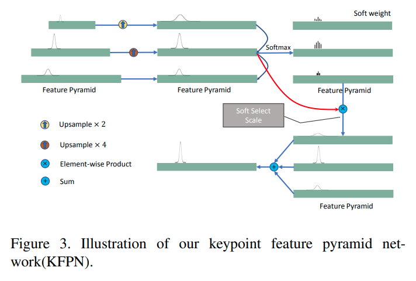
MonoPair
这篇文章是实验室大师兄邰磊在阿里的CVPR2020 paper。有官方网站
文章的核心创新是第一个使用场景中不同物体之间的相互约束进行优化的paper。
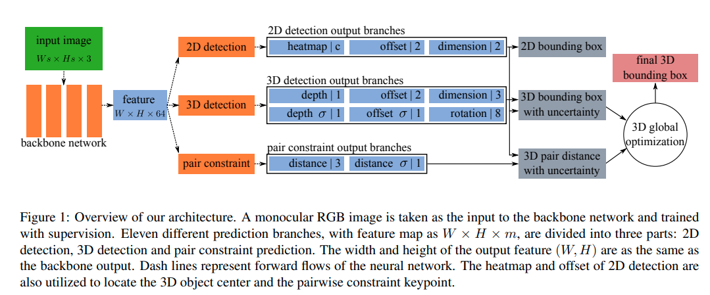
SMOKE
这篇paper的创新点不算特别多。 1. 使用了CenterNet的架构进行中心点的估计。 2. 使用了distangling loss, 这个来自于MonoDIS 3. 数据增强上使用了shifting等方法，但是只是用来train keypoint热图等结构。属于specialized augmentation for specialized cost.可谓深度调参
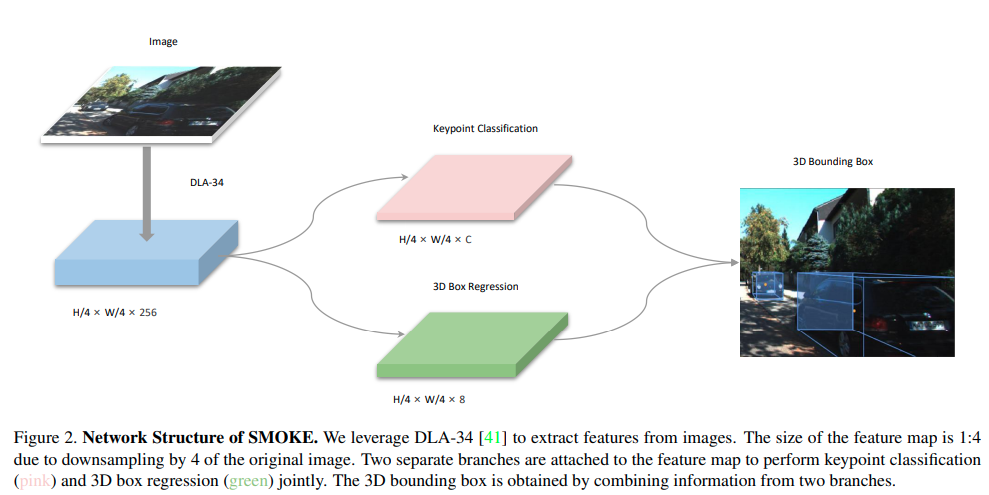
YOLOMono3D
不多说了，快上车